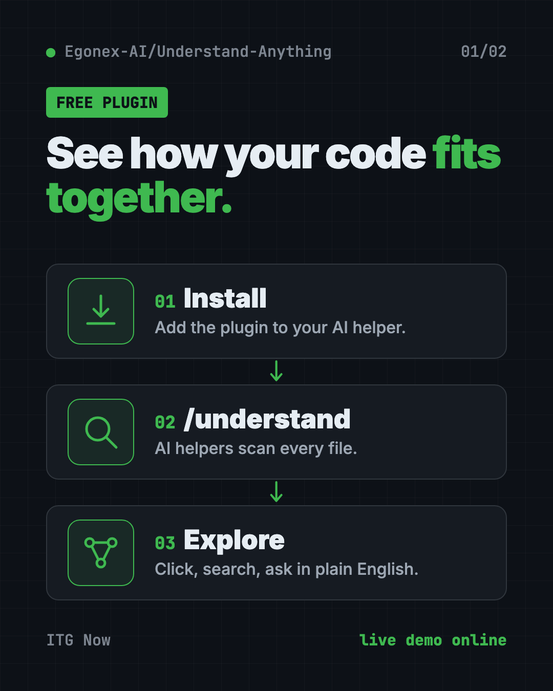
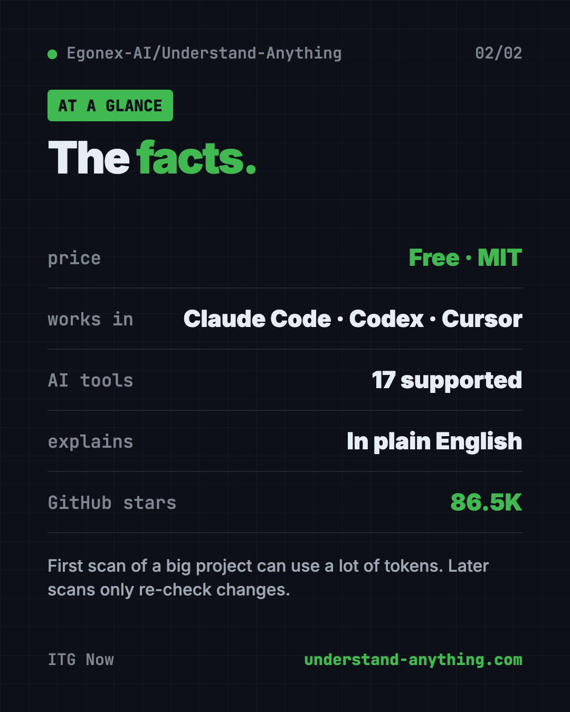

Understand Anything: Visualize Any Codebase for Free (2026)
- Published 15 Oct 2026
- Updated 16 Oct 2026
- 8 min read
- License MIT
- By the ITG Now team
Understand Anything is a free tool that lets you visualize any codebase as a clickable map. Every file and function becomes a dot you can tap, with a plain-English note on what it does and how it connects to the rest.
It runs inside AI coding helpers like Claude Code, Codex, Cursor and Copilot. Here's what it does, real ways to use it, and the exact install steps.
Key takeaways
- Free and open source. MIT license, about 86.5K stars on GitHub.
- Turns code into a map you can pan, zoom, search and click.
- Explains in plain English, with guided tours that teach the project in the right order.
- Ask questions like "How does the payment flow work?" and get answers from the map.
- One catch: the first scan of a big project can use a lot of AI tokens.
What is Understand Anything?
Picture your first day at a new job. Someone hands you a project with 200,000 lines of code. Your task is to fix one small thing. Where do you even start?
Understand Anything is made for that moment. It's a plugin, an add-on for your AI coding helper. You run one command, and a team of AI helpers reads your whole project. Then it builds a knowledge graph: a map of every file, function and class, and how they link up.
Finally, it opens a dashboard in your browser. That's an interactive screen where you can explore the map visually.
The makers put their goal simply. They don't want a graph that wows you with how complex your code is. They want one that "quietly teaches you how every piece fits together."
It's made by Yuxiang Lin and Infinite Universe, Inc., and shared on GitHub. There's a live demo on their website you can try in your browser right now.

What can Understand Anything do?
From the README:
- Explore the map. Click any dot to see a plain-English summary, its links and its code.
- Guided tours. Auto-made walkthroughs of the project, in the order things depend on each other.
- Search by meaning. Type "which parts handle login?" and get the right spots, even if the words don't match.
- See the ripple effect. Before you save a change, see which parts of the system it touches.
- Business view. See how the code maps to real business steps, like checkout or sign-up.
- Layers in color. It groups code into layers like API, data and UI, with a color legend.
- Adjusts to you. The dashboard shows more or less detail for a junior developer, a product manager or an expert.
- Explains coding ideas. 12 common programming patterns are explained right where they appear.
- Map a wiki, too. Point it at a folder of linked notes and it maps the ideas and how they connect.
It also works in seven languages, including Chinese, Japanese and Korean.
How to use Understand Anything (real examples)
- Get up to speed on a new job. Run
/understand-onboardto make an onboarding guide for the project. - Ask a plain question. Type
/understand-chat How does the payment flow work?and get an answer based on the map. - Check a change before you commit. Run
/understand-diffto see what your edits could affect. - Dig into one file. Run
/understand-explainwith a file path for a deep-dive on just that part. - Help a non-coder on your team. Product managers can open the dashboard and follow the business view, no code reading needed.
💡 Tip: Commit the finished map to your project. The README says teammates can then skip the scan and open the dashboard right away.
How to install Understand Anything
These are the steps from the README. You need an AI coding helper already set up, like Claude Code.
Step 1: install the plugin in Claude Code. Type these into Claude Code. Copy and paste this:
/plugin marketplace add Egonex-AI/Understand-Anything
/plugin install understand-anything
Step 2: scan your project. Open your project and run this:
/understand
A team of AI helpers scans every file and saves the map inside your project, in a folder called .ua.
Step 3: open the dashboard. Run this:
/understand-dashboard
A map of your code opens in your browser, colored by layer, searchable and clickable.
Install for Codex, Gemini CLI and others
For tools like Codex, OpenCode, Gemini CLI, Cline or Kiro, there's a one-line installer. On Mac or Linux, open Terminal. Copy and paste this:
curl -fsSL https://raw.githubusercontent.com/Egonex-AI/Understand-Anything/main/install.sh | bash
On Windows, open PowerShell. Copy and paste this:
iwr -useb https://raw.githubusercontent.com/Egonex-AI/Understand-Anything/main/install.ps1 | iex
It asks which tool you use. Restart that tool afterwards. In Codex, type $understand instead of /understand.
Cursor and VS Code with GitHub Copilot can find the plugin on their own when you open a copy of the project.
⚠️ Heads up: The first
/understandreads your whole project and can use a lot of tokens on big codebases. Tokens are what AI services charge for. The makers suggest running it on a subscription plan or a local model. Later runs only re-check changed files, so they cost far less.

Can I view the map without Claude Code?
Yes. Once someone makes the map and saves it in the project, anyone can open it with one command. No AI, no API key. You only need Node.js version 18 or newer.
Copy and paste this, swapping in your project's folder:
npx https://github.com/Egonex-AI/Understand-Anything/releases/latest/download/understand-anything-viewer.tgz /path/to/analyzed/project
The README says it's served read-only from your own disk, with no AI calls and no data leaving your machine.
Let Claude or Codex set it up for you
Claude Code and OpenAI Codex are AI helpers that can run setup steps on your computer. You paste a request, it does the steps, and you approve each one.
Copy and paste this:
Please help me set up Understand Anything from github.com/Egonex-AI/Understand-Anything.
1. Tell me which AI coding tool I'm using, and the right install steps from the README.
2. Install the plugin.
3. Before scanning, tell me roughly how big this project is so I know the token cost.
4. Run the scan, then open the dashboard.
5. Give me a 5-step tour of the most important parts of this project.
Then try asking:
Use Understand Anything to explain how a user signs up in this project, step by step.
Run understand-diff on my current changes. What else could they break?
Make an onboarding guide for a new teammate, and save it as a file.
Understand Anything at a glance
| Price | Free plugin; scanning uses your AI plan's tokens |
| Works offline | Viewing a saved map, yes; scanning needs an AI model (local models work) |
| Platforms | Mac, Windows, Linux, inside 17 AI coding tools |
| License | MIT (open source) |
| GitHub stars | About 86.5K |
| Languages | 7, including English, Chinese, Japanese and Korean |
| Best for | New team members, students and anyone handed an unfamiliar project |
Our take
Understand Anything turns the scariest part of a new project, the first look, into something you can click around. The guided tours and plain-English notes make it useful even for people who don't write code.
What we like:
- The live demo lets you try it with zero setup.
- Plain-English summaries on every piece.
- Teammates can view a shared map without any AI.
- Works with many AI coding tools, not just one.
- Updates only what changed after the first scan.
What to watch for:
- The first scan can be costly on big projects.
- AI summaries can be wrong, so double-check anything important.
- Install steps differ a bit from tool to tool.
- The dashboard has a lot going on at first glance.
If you mainly want your AI to find code faster, try CodeGraph, which gives your AI a map of your code, or Graphify, which maps your whole project. Understand Anything was also in our trending repos for the week of May 25.
FAQ
Is Understand Anything free?
Yes. The plugin is free and open source under the MIT license. Scanning a project uses your AI plan's tokens.
Which AI tools work with Understand Anything?
The README lists 17, including Claude Code, Codex, Cursor, VS Code with Copilot, Gemini CLI, OpenCode, Cline and Kiro.
Can non-programmers use Understand Anything?
Yes, once a map exists. The dashboard gives plain-English notes, guided tours and a business view. The dashboard can also adjust its detail for a product manager.
How do I visualize any codebase without sending code to the cloud?
Use a local model, like one through Ollama, for the scan. The saved map can then be viewed fully offline.
Does Understand Anything re-scan everything each time?
No. After the first run, it only re-checks files that changed. You can also make it update after every commit.
Get Understand Anything: github.com/Egonex-AI/Understand-Anything
Keep reading

net-merge: Combine Wi-Fi and Phone Internet, Free
net-merge is a free app to use two internet connections at once, like Wi-Fi plus a phone hotspot, on Windows, Mac and Linux. No account or VPN.

REA: Reverse Engineer Anything With Your AI Agent
REA (Reverse Engineer Anything) lets an AI agent look inside an app and explain how a feature works, with proof. What it does, what it misses, and the risks.

DBX: Free Database Client for 100+ Databases, With AI
DBX is a free database client that opens 100+ kinds of databases in a 25 MB app. Its AI helper turns plain English into database queries for you.